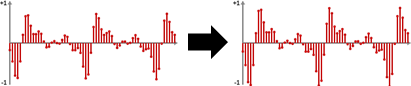
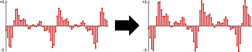
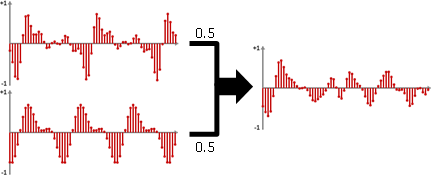
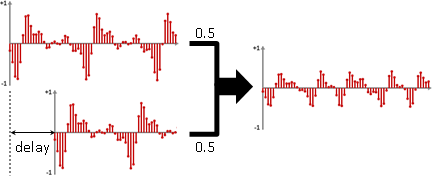
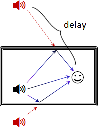
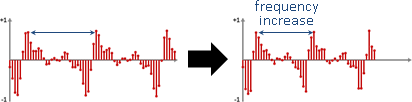
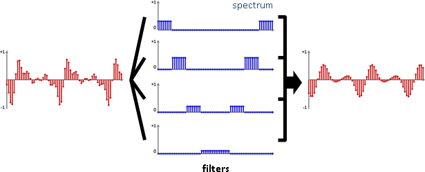
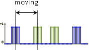
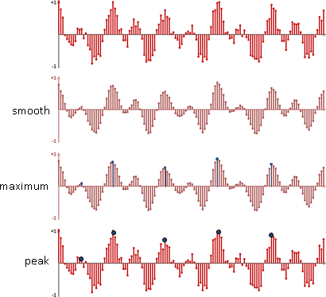
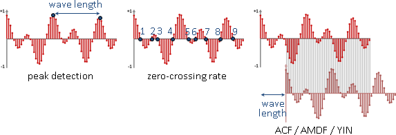

Audio Synthesis（Under Construction!）
Audio Synthesis
合成。以建構組合的方式製作聲音。
聲音合成分為電子觀點、資工觀點，兩套學問大相逕庭。這裡只談資工觀點。
電子觀點：利用電子元件，以振盪器、濾波器製作聲音，發展成電子琴。 資工觀點：利用中央處理器，以簡諧波、數學運算製作聲音，發展成音樂編輯軟體。
前人研擬了許多種聲音合成的策略。加法合成是最基本的策略。
additive synthesis：加法合成。疊加許多個波。 subtractive synthesis：減法合成。利用濾波器，刪除某些頻率。 granular synthesis：顆粒合成。堆砌一丁點長度的聲音。特色是嘈雜。 wavetable synthesis：建立聲音波形的資料表，直接套用現成的波形。
前人創造了兩種聲音合成的原理：簡諧波、數位波導。等你創造第三種。
simple harmonic wave：數學上，簡諧波是最理想的振動方式。數學上，根據「傅立葉級數」，任意數列皆可拆解成不同頻率的簡諧波。因此有人認為，反向操作，疊加各種頻率的簡諧波，可以生成各種聲音。這是我設計的一套練習題。
digital waveguide：模仿琴弦的振動方式，產生琴弦聲。正在形塑成一套理論。
Sound Effect
首先來個範本：「紅豆生南國，春來發幾枝」。
gain：音量放大（縮小）。振幅乘上倍率。波形於垂直方向伸展或壓扁。
normalization：校準聲音波形，中央為0，最高振幅為1。等同於聲音盡量調到最大聲。
pre-emphasis：有時候錄音環境不佳，錄製到的聲音濛濛霧霧。微分運算可使聲音清晰。副作用是音量下降。
連續函數的情況下，簡諧波，微分之後，仍是簡諧波。離散數列的情況下，波形會稍微失真。
smoothing：有時候錄音環境不佳，錄製到的聲音唧唧吱吱。平均值可抑制雜訊。副作用是聲音模糊不清、音量下降。
連續函數的情況下，簡諧波，取區間平均值，仍是簡諧波。離散數列的情況下，波形會稍微失真。
mixing：混音。混和好幾道聲音。其實就是加權平均值。
為了避免超過數值上下限，為了維持原音量、原音色，有時會做複雜的處理。
echo：回聲。相同聲音稍後再度出現。其實就是延遲與混音（位移與疊加）。
reverb：迴響。餘音繞樑。反覆回音，間隔極短。聽起來彷彿位於寬敞的密閉空間。
將反射路徑改成直線，可以發現回聲的本質，是不同地點的聲音，抵達人耳時有時間差；接觸牆壁時，有如套用濾波器。實作的方式很簡單：位移、濾波器、疊加。
pitch shifting：移調。改變頻率。
調整播放速度（伸縮時間軸），頻率就改變。副作用是聲音長度也改變。比較理想的演算法，請見後面章節。
chorus：合唱。混和好幾道聲音，每道聲音的頻率略有變動、延遲時間略有差異。
robot sound：簡易做法是混和兩道聲音，頻率略高、頻率略低的聲音。
根據數學公式cos(a)cos(b) = cos(a-b) + cos(a+b)，一個簡諧波，乘上另一個簡諧波，就得到頻率略高、頻率略低的兩個簡諧波疊加在一起。這個技術其實就是AM，收音機的調幅。
根據傅立葉級數，原訊號可以看成一群簡諧波相加。根據分配律，原訊號乘上一個簡諧波，可以看成一群簡諧波個別乘上一個簡諧波，最後再疊加。
harmonics：和聲。混和好幾道聲音，每道聲音的頻率皆不同。
想要好聽的和聲，必須按照樂理，選擇適當音階（請見後面章節）。現在的流行音樂，幾乎每一首歌都套用和聲效果來修飾聲音。
distortion：失真。降低聲音品質，聽起來像破音。
失真方法非常多。例如requantization：重新量化，從16-bit變成8-bit，甚至更低，聽起來宛如收音機，哧哧的。例如clipping：振幅乘上一個比較大的倍率，讓振幅超過±32767並且截斷，聽起來嘩嘩的；這是電子吉他經典音效，很多人喜歡這味。
equalization：調整每個頻帶的音量，使得聽起來均勻。套用許多個濾波器即可。
人類聽覺對於每種頻率的音量感受能力都不同，機制十分複雜（請見後面章節），難以設計演算法。目前是由專業的錄音師，手動調整各頻帶音量。前面的影片就是一個示範。
wah-wah：電子吉他經典音效，聽起來哇哇叫。用濾波器放大某段頻帶的聲音。隨著時間，頻帶來回移動。
pitch bending：轉音。頻率平滑地增減（頻譜的強度平滑地位移）。【查無資料】
morphing：一種聲音，平滑柔順地轉化成另一種聲音。推測是每個頻帶各自轉音。【查無資料】
Sound Design
設計。綜合上述技巧，創造各式各樣的聲音。
Sound Interaction Design
互動設計。根據人類對於聲音的感受，利用聲音傳遞訊息、溝通互動。
例如有人研究什麼是恐怖的聲音。
Audio Analysis
分析。以下介紹幾個基礎的分析項目。
peak detection：找到波形的尖峰。
一、消除鋸齒：方法很多，諸如 口、時域的平滑效果（k點平均值）（k點中位數）。 口、頻域的刪除高頻（高頻形成鋸齒）。 口、時域的Linear Prediction（迴歸函數）。 二、尋找極值：中央高、兩側低。 三、估計峰尖：極值前後，三點做拋物線內插，求出拋物線頂點。
frequency detection：找到波形的頻率。
時域的方法 peak detection：找到兩個波峰，位置相減得到波長，波長倒數得到頻率。僅適合純音。 zero-crossing rate：波形穿越零的次數。僅適合純音。 ACF：位移、相乘、加總（內積）。各種位移量，找最大值。 AMDF：位移、相減再絕對值、加總（絕對值誤差）。各種位移量，找最小值。 YIN：位移、相減再平方、加總（平方誤差）。各種位移量，除以前綴和，找最小值。 複合：例如 ACF / (AMDF + 1.0)，找最大值。 頻域的方法 peak detection：找到強度最高的頻率。計算速度較慢。
Fourier transform：波形分解成一群簡諧波，頻率為整數倍。
傅立葉轉換的計算結果，經常轉換成頻譜。除了廣為人知的頻譜之外，還有許多衍生產物，命名方式是翻轉字母順序，非常搞笑。
specmurt和cepstrum主要用於共鳴聲音，例如樂器聲、說話聲。共鳴產生諧音：強度頻譜上，強度規律地出現，其頻率呈倍數。頻率軸取log，讓出現間隔成為等距，叫做specmurt。強度規律地出現，宛如波，於是有人再度套用一次傅立葉轉換找到基頻（個人認為莫名其妙），叫做cepstrum。由於頻譜有一些重大缺點，又加上計算時間長，所以並不好用。
spectrum：頻譜。分為強度頻譜、相位頻譜。 specmurt：名稱不詳。頻譜的座標軸，頻率取log，符合人類聽覺感受。 cepstrum：倒頻譜。強度頻譜，強度值取log，實施（逆向）傅立葉轉換。
envelope detection：找出波形、強度頻譜的包絡線。
波形劇烈變動，處處尖峰；波形簡化為包絡線，容易辨認尖峰。
聲音訊號波形的包絡線（時域）： 回、正向傅立葉轉換，數列後半（共軛對稱部分）設為0， 逆向傅立葉轉換，取絕對值，乘以2。 回、Hilbert transform，取絕對值。 效果同上。
| Assume g(t) x cos(wt)
1. fourier transform | G(f) * 0.5 (delta(w) + delta(-w))
2. negative frequency: value -> 0 | G(f) * 0.5 delta(w)
3. inverse fourier transform | 0.5 g(t) x e^iwt
4. abs | 0.5 |g(t)|
5. multiply 2 | |g(t)|
強度頻譜的包絡線（頻域）： 回、聲音訊號實施linear prediction，轉換到頻域。稱做LPC spectrum。 linear prediction的項數，設定成尖峰數量的兩倍（共軛對稱）。pole即尖峰。 回、強度頻譜套用lowpass filter。因其具有平滑效果。 不合邏輯，比較少用。 回、承上，改成取log，並且改成在頻域實施lowpass filter。 此即cepstrum乘上0或1。 不合邏輯，比較少用。
Audio Coding
編碼。請見下面影片。
Audio Compression
壓縮。主要的應用是聲音檔案，盡量減少檔案容量、盡量維持聲音品質。例如大家耳熟能詳的MP3。
MP3受版權保護。使用編碼功能，必須付費申請授權。因此所有的程式語言都沒有編碼功能，頂多只有解碼功能。但是如果你想要研究原始碼，可以參考LAME：據說不是MP3、純粹做為教育用途的開源專案。
Audio Player
播放器。播放音樂，一幀一幀處理。沒什麼特別的。知名應用是隨身聽。
開發韌體時，從硬碟或網路讀取聲音資料、將處理後的聲音資料傳送到音效卡，兩者的時間是不同步的，前者斷斷續續，後者必須連續。此時你需要一個circular queue做為緩衝。circular queue和frame的相對大小，決定了播放品質。
Audio Stream
串流。主要的應用是線上音樂。例如背景雄厚的KKBox和被人告發的Now.in。
我沒有研究背後技術。估計黑白兩道的問題遠比技術問題困難的多。
Radio
收音機、無線電、無線電視，以電磁波傳送資料。
電磁波的特性是低頻（低能量）易受干擾、高頻（高能量）不易受干擾。我們利用超高頻的sine wave調整訊號，升高訊號的頻率。調整方式一共兩種，調整振幅AM與調整頻率FM，相信大家耳熟能詳。

AM, amplitude modulation：sine wave的振幅等於原訊號。 FM, frequency modulation：sine wave的頻率等於原訊號（的倍率、再加一常數）。
AM調整訊號：sine wave與訊號，點對點相乘。 AM還原訊號：包絡線。 FM調整訊號：sine wave的參數是訊號。 FM還原訊號：FM微分得AM。AM求包絡線得訊號。